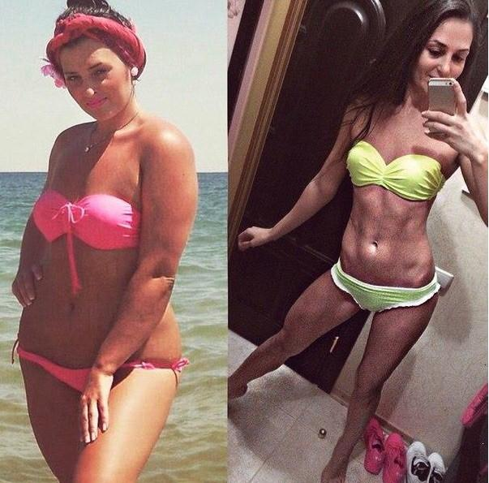
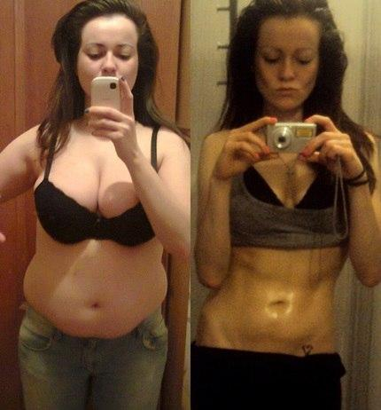
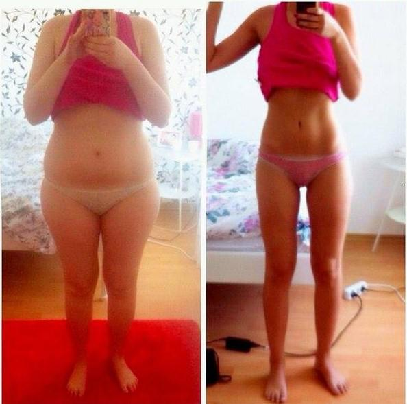

Schlank sein heißt glücklich sein! -20 kg in 1 Monat
Vor ein paar Jahren hätte ich niemals an Abnehmen gedacht. Ich hatte keine Probleme mit meinem Gewicht, deswegen dachte ich auch nicht weiter darüber nach. Ich fand nicht, dass 80kg ein Problem wären. Ich hatte ein bisschen Cellulite, aber so schlimm war es nicht. Und ich hatte einen Freund. Wir waren ungefähr ein halbes Jahr zusammen: wir gingen aus und aßen Nachtisch und er hat mir immerzu Schokolade geschenkt. Dann habe ich 10 kg zugelegt. Da ist so nach und nach passiert, daher ist es mir nicht aufgefallen. Aber ihm fiel es auf. Vorher gingen wir Abends oft weg, aber dann verbrachte er seine Zeit lieber vor dem Computer. Ich verstand nicht, was anders war, warum er sich so verhielt.
Er antwortete auf meine Fragen mit einem Schweigen. Aber dann ließ er mich sitzen und alles was ich von ihm bekam, war eine einzige Nachricht:
"Ich dachte nicht, dass wir uns wieder sehen würden! Es ist schlimm, wenn eine Frau Cellulite hat. Du wirst im Bikini so hässlich aussehen, oder in einem Rock oder kurzen Hosen. Deine Cellulite ist widerlich, du solltest besser zu Hause bleiben!"
Ich war so wütend auf ihn, und so verletzt! Ich habe die ganze Nacht geheult. Am nächsten Morgen sagte mir eine Freundin, dass nur ein neuer Kerl dir hilft, den alten zu vergessen. Und so traf ich Max.
Auf Anraten meiner Freundin hin habe ich einen Typen im Internet kennengelernt. Soweit ich es verstand, war er auch auf der Suche nach einer ernsthaften Beziehung. Deswegen sagte er, wir sollten keine Zeit verschwenden und uns so schnell wie möglich treffen. Auf den Bildern sah er sehr sportlich und attraktiv aus, also hatte ich keine Bedenken.
Wir haben vereinbart, uns an einer Bushaltestelle in der Nähe meiner Wohnung zu treffen und es war wohl das kürzeste Treffen der Welt. Als ich dort ankam, wartete er bereits auf mich mit Dutzenden von Rosen. Ich erkannte ihn sofort, weil ich mir die Bilder auf seine Seite gut angesehen hatte. Er sah mich auch, und kam langsam auf mich zu. Er lächelte, offensichtlich erkannte er mich auch. Aber je näher er kam, desto unglücklicher sah er aus. Als wir voreinander standen, wich er mir mit einem finsteren Blick aus und ging an mir vorbei. Er drehte sich nicht mehr um. Ich stand da mit einem großen Fragezeichen über meinem Kopf.
Ich habe die Antwort in einer Nachricht gefunden, die er mir nach dieser Begegnung schrieb:
Daraufhin wurde ich richtig wütend. Von welchem Fett hat er gesprochen? War ich etwa übergewichtig? Ich hatte wahrscheinlich ein paar Kilos zu viel auf den Rippen. Aber sah ich denn wirklich aus wie ein Elefant?
Ich habe nicht weiter nach jemandem im Internet gesucht, denn ich wollte mir weitere Peinlichkeiten ersparen. Wochenlang habe ich geweint, und mich mit Keksen und Eiscreme getröstet. Meine Figur war mir in der Zwischenzeit egal. Schlimmer konnte es nicht mehr werden.
Aber das Leben geht weiter. Ich musste etwas unternehmen. Wenn mich die Gesellschaft nicht so akzeptierte wie ich bin, war es an der Zeit, sich zu verändern. Dieselbe Freundin, die ich bereits erwähnte nahm mich mit ins Fitnessstudio. Jeder weiß, dass Laufen beim Abnehmen hilft. Ich hasse Laufen, aber ich habe ich trotzdem dazu angetrieben. Ich bin drei Tage hintereinander ungefähr jeweils eine Stunde gelaufen. Meine Beine taten so weh, dass ich kaum noch stehen konnte. Und das Ergebnis? Ich habe ein halbes Kilo in 3 Tagen abgenommen! Das Wochenende darauf habe ich so viel gegessen, dass ich wieder mehr drauf hatte, als ich abgenommen habe. Danach habe ich jegliche Motivation verloren und ging nicht mehr zum Sport. Ich war erschöpft und müde und so suchte ich im Internet nach Antworten. Ich glaube, ich habe alle Blogs und Foren gelesen, die es gibt.
Es stellte sich heraus, dass man am schnellsten mit einem bestimmten Produkt, das von dem Internationalen Verein der Ernährungswissenschaftler entwickelt wurde, abnehmen konnte. Es ist absolut unbedenklich für die Gesundheit und kann sogar Giftstoffe und Cholesterin aus dem Körper entfernen. Es nennt sich , und ist ein Pulver mit Schokoladengeschmack mit natürlichen Inhaltsstoffen. Man muss sich nicht mehr im Fitnessstudio quälen und muss nicht fasten. Alles, was man tun muss, ist, das Pulver mit warmen Wasser zu vermengen und Morgens ein Glas auf leeren Magen trinken. Das Fett fängt an, vor den eigenen Augen zu schmelzen! Diese Produkt hat bereits tausende von lobenden Bewertungen erhalten und ich dachte, es wäre an der Zeit, mich von meiner Cellulite und meinem Hüftspeck zu verabschieden.
Nach einem missglückten Trainingsversuch im Fitnesstudio, war meine letzte Hoffnung. Ich habe es auf der offiziellen Webseite bestellt, um zu vermeiden, ein gefälschtes Produkt zu kaufen. Nach ein paar Tagen der Einnahme ging das schmerzhafte Gefühl in meinen Beinen zurück, ich fühlte mich besser. Am zweiten Abend stellte ich mich auf die Waage und konnte meinen Augen kaum trauen: Ich habe 1,7 kg in 2 Tagen abgenommen, ohne Diät oder Sport (was mir nur Schmerzen und Enttäuschung einbrachte).
Nach einer Woche hatte ich 10 Kilo verloren, mein Bauch und meine Hüften wurden sichtbar schlanker. Ich habe das Produkt einen weiteren Monat genommen und wurde all das Fett in meinem Körper sowie die Cellulite los. Zu meiner Überraschung wurden auch meine Brüste ein bisschen kleiner, aber dafür straffer. Mein Hintern bekam mehr Konturen, und war so rund und knackig wie ein Apfel. Ich habe 20 kg in 1 Monat abgenommen, ohne zu fasten oder mich beim Sport abzuquälen. Ich musste mir neue Klamotten kaufen, aber das war es wert!
Ich ging wieder an den Strand, habe mir viele Bikinis gekauft und keine Gelegenheit ausgelassen, ans Wasser zu gehen. Dort habe ich auf meinen jetzigen Freund kennengelernt. Er dachte, ich scherze, als ich ihm erzählte, dass mich mein Ex-Freund wegen meines Gewichtes verlassen hat und sich auch ein anderer Kerl über mich lustig machte. Ich liebe es, wenn er mich in seinen Armen trägt. Er sagt mir dann, dass ich leicht wie eine Feder bin.
Ich nehme noch immer hin und wieder um meine derzeitige Figur zu halten, vor allem nach großen Mahlzeiten oder Parties.
Kommentare:
hat mir dabei geholfen, abzunehmen, als mein Freund mir sagte, ihn würden meine extra Kilos anwidern. Nach nur 2 Monaten habe ich 31 Kilo abgenommen. Und meine Haut wurde nicht schlaff - im Gegenteil, sie wurde straffer.
Ich wünschte, alle Nahrungsmittel wären wie - man isst und trinkt und nimmt dabei noch ab :-)
Als ich 86 Kilo wog, redete ich mich raus, indem ich mir sagte, ich hätte große Knochen. Mädels, es gibt keine "großen" oder "schweren Knochen" - es gibt nur Fett, das weiß ich jetzt. Nachdem ich deinen Artikel gelesen hatte, beschloss ich, zu bestellen, und nach 2 Monaten zeigte meine Waage 57 Kilo an. Können Sie sich das vorstellen? - 29 kg in 2 Monaten 
Es ist Zeit, sich von den überschüssigen Pfunden zu verabschieden! Ich habe bereits bestellt. Ich hoffe, dass ich euch bald von meinen Fortschritten berichten kann.
Ich habe auch abgenommen! Ich habe es satt, mich hinter Schlabberklamotten, Korsetts und Badetüchern zu verstecken. Es liegt nur ein Monat zwischen diesen Bildern! Es geht mir toll, ich fühle mich selbstbewusst und sexy. Und das Beste ist, dass ich keine anstrengenden Diäten oder Sport brauche. Ich liebe !
Ich hätte nie gedacht, dass ich Süßen essen könnte und trotzdem abnehmen würde! Mein Mutter und ich wollten ausprobieren. Innerhalb der ersten 10 Tage hat meine Mutter 11kg abgenommen, und ich habe 10 Kilo verloren. Meine Mutter wollte nicht fotografiert werden, aber ich will trotzdem ein bisschen angeben :-). Und das war alles möglich ohne Sport oder Diät. 
hat es mir ermöglicht, nach meiner Schwangerschaft an einem Bikini Wettbewerb teilzunehmen. In nur einer Woche habe ich mehr als 6kg abgenommen, man konnte meine wohlgeformten Muskeln sehen, nur weil ich jeden Morgen und jeden Abend einen Milchshake getrunken habe. Jetzt, wenn ich mit meinem Son an den Strand gehe, fühle ich mich, als würde ich auf dem Catwalk laufen und alle Leute drehen sich nach mir um :-)
Ich hasse Diäten! Jetzt kann man endlich ohne abnehmen!